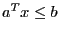
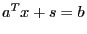
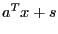
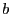

Next: ConstrSVio Up: Quality Attributes Previous: BoundSVioSum
| Type: | double |
|---|---|
| Modifiable: | No |
Reporting constraint violations for the simplex solver is actually
more complex than it may appear, due to the treatment of slacks on
linear inequality constraints. The simplex solver introduces explicit
non-negative slack variables inside the algorithm. Thus, for example,
 becomes . In this formulation,
constraint errors can show up in two places: (i) as bound violations
on the computed slack variable values, and (ii) as differences between
 and . We report the former as ConstrVio
and the latter as ConstrResidual.
For MIP models, constraint violations are reported in ConstrVio.
Available for all model types.
For examples of how to query or modify attributes, refer to our Attribute Examples.